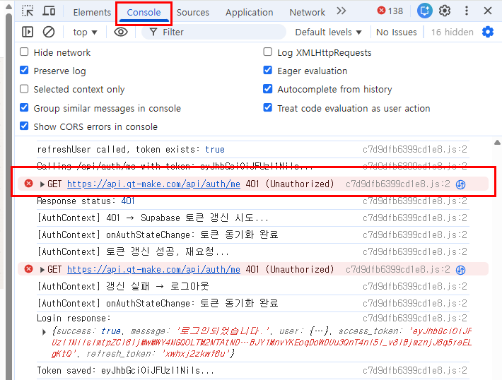
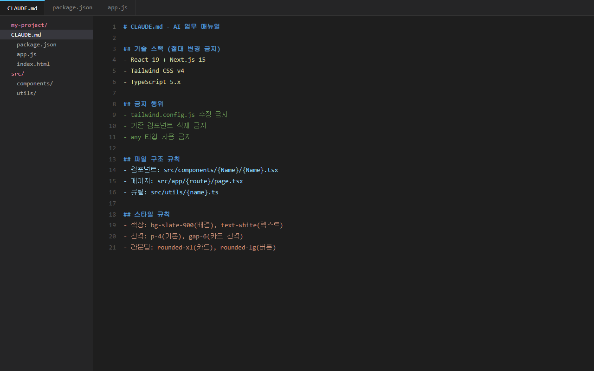
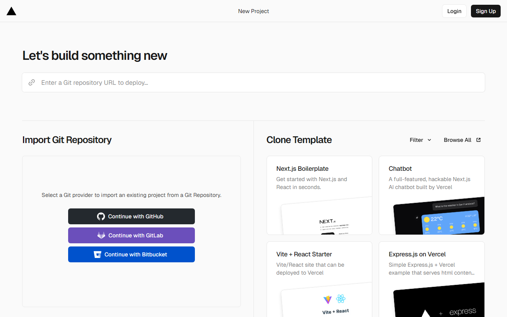

2주차 실습을 마친 여러분, 고생 많으셨습니다.
이제 '만들기'를 넘어, 실제로 쓸 수 있는 앱으로 다듬을 시간입니다.
에러를 잡고, 디자인을 입히고, 보안의 벽을 넘는 법을 공개합니다.
120분 후, 여러분의 결과물은 단순한 실습 코드가 아닌 '완성된 도구'가 됩니다.
F12 디버깅, Dribbble 레퍼런스, 기능 확장 후 첫 번째 실습
AI 능력을 확장하는 스킬 설치, 강사의 규칙 파일로 품질 고정
회사에서 쓸 프로그램을 직접 제작하고 완성
자연어 한 줄이면 AI가 복잡한 백엔드 로직과 UI 설계를 동시에 처리합니다.
"구글 로그인 기능 넣어줘"
보안 로직 자동 생성
"입력한 데이터 저장되게 해줘"
새로고침해도 유지되는 앱
"폰에서도 잘 보이게 해줘"
반응형 UI 3분 만에 완성
기능을 추가하다 보면 에러가 생깁니다. 그때 어떻게 하는지, 다음 슬라이드에서 배웁니다.
AI는 여러분의 화면을 보고 있지 않습니다. '증거'가 없으면 추측만 할 뿐입니다.
증상(버튼 안 됨)이 아니라 원인(에러 로그)을 줘야 합니다.
로그 한 줄이면 디버깅 시간이 대폭 단축됩니다.
원칙: AI에게 '눈'을 빌려주는 과정
앱을 실행한 상태에서 F12를 눌러 개발자 도구를 엽니다.
원칙: 추측이 아닌 팩트 전달
상단 [Console] 탭을 클릭하고 나타나는 빨간색 에러 메시지를 전체 드래그하여 복사합니다.
원칙: 구체적 행동 요구
"이 에러 메시지가 떴어. 원인을 분석하고 코드를 수정해줘"라고 붙여넣습니다.

에러 메시지를 그대로 복사해서 붙여넣으면, AI가 정확한 줄 번호와 원인을 짚어줍니다.
말로 디자인을 설명하는 건 한계가 있습니다. 이미지를 보여주세요.
지난주에 만든 앱을 열고, 배운 기법들을 하나씩 적용해봅니다.
F12 콘솔의 빨간 에러 메시지를 복사해서 AI에게 주고 수정을 요청하세요.
Dribbble에서 마음에 드는 디자인을 캡처하여 업로드하고 "이 톤앤매너로 바꿔줘"라고 하세요.
로그인이나 데이터 저장 기능을 추가해보세요. "구글 로그인 넣어줘"라고 하면 됩니다.
일부러 버튼을 클릭하거나 값을 입력하여 에러를 유도해보세요.
이미지 레퍼런스를 주면 결과물이 확 달라집니다.
채팅을 새로 열 때마다 배경 설명을 반복하는 낭비를 끝내야 합니다.
마크다운(.md) 텍스트 파일 하나에 도구, 팀 구성, 품질 기준이 전부 들어갑니다.
프로젝트 폴더에 이 파일들을 넣으면, AI가 읽고 팀처럼 움직입니다.
파일 3개를 넣는 것만으로 AI의 행동이 완전히 달라집니다 — 다음 슬라이드에서 바로 배포합니다
이 파일을 프로젝트 폴더에 넣으면, 여러분도 강사와 동일한 AI 팀을 갖게 됩니다.
작업을 독립 도메인별로 분리하여 설계 → 개발 → 검증 순서로 처리
AI에게 "스킬 설치해줘" → skills.sh에서 자동 설치. 규칙 파일이 상황별 스킬 자동 호출
한국어 응답 + 보안 규칙 + 디버깅 원칙 + 커밋 전 자동 검증
배포된 규칙 파일을 프로젝트에 넣고, AI의 동작이 달라지는지 직접 확인합니다.
없을 때: AI가 영어로 대충, 보안 무시
있을 때: 한국어 응답 + 보안 검증 + 디버깅 원칙 적용
같은 "만들어줘"인데 결과물 품질이 다릅니다.
규칙 파일의 각 섹션이 무슨 역할인지 해설서에서 색상별로 설명합니다. 이전 슬라이드에서 "해설서 보기"를 클릭하세요.
skills.sh에서 4가지 카테고리, 각 1~2개 핵심 스킬을 설치합니다.
스킬을 직접 만들고, 마켓에서 검색
UI, 애니메이션, CSS, 반응형 디자인
에러 해결, 테스트, 코드 검증
아이디어, 분석, 작업 분배
이 스킬들이 앞에서 배포한 규칙 파일과 연동됩니다 — 규칙 파일이 스킬을 자동으로 호출합니다.
8만개+ 스킬 마켓에서 AI가 직접 골라 설치합니다.
8만개+ 스킬 마켓에서 AI가 찾아 설치합니다 — 여러분은 한국어로 요청만 하세요
많은 기업이 보안을 이유로 외부 AI 서비스 접속을 제한하고 있습니다.
ChatGPT 웹사이트는 차단 대상이지만, 내가 만든 프로그램은 그냥 .exe나 웹페이지입니다.
AI 서비스가 아니라 '내가 만든 도구'로 인식됩니다.
집에서 만들어 회사에서 쓰는 '나만의 커스텀 AI 도구' 리스트입니다.
개요만 넣으면 표준 양식의 보고서와
PPT 슬라이드 구조를 1분 만에 초안 생성
이미지 생성용 고급 프롬프트 제조 및
녹취록을 3줄 핵심 요약으로 자동 변환
ChatGPT 사이트가 차단돼도, 직접 만든 프로그램은 AI 채팅 사이트 없이 독립 실행됩니다.
채팅창 하나에 모든 기능을 때려넣지 마세요. '탭'으로 구분된 전문 앱을 만듭니다.
"보고서 생성, PPT 구조화, 이미지 프롬프트 기능을 하나의 웹앱으로 만들고 상단 탭으로 구분해줘.
규칙 파일을 참고해서 프로젝트 구조를 깔끔하게 잡아줘."

규칙 파일을 사용하면 AI가 매번 같은 기준으로 동작합니다
한 번에 완성하려 하지 마세요. 단계별 추가와 디버깅이 핵심입니다.
원칙: 큰 덩어리를 쪼개어 AI의 인지 부하를 줄인다
"보고서 탭에는 키워드 입력창을, PPT 탭에는 슬라이드 개수 선택 기능을 넣어줘"라고 하나씩 요청하세요.
원칙: 추측하지 말고 정확한 에러 메시지를 먹인다
버튼이 안 눌리거나 화면이 깨지면 F12 콘솔의 빨간 에러를 복사해서 던지세요. AI가 정확한 원인을 짚어줍니다.
에러 메시지를 복사해서 AI에게 주면, 추측 대신 정확한 원인 분석이 가능합니다.
비개발자의 무기는 '눈'입니다. 좋은 디자인을 캡처해서 AI에게 보여주세요.
Dribbble에서 'Dashboard UI' 검색 결과
텍스트 설명보다 이미지 한 장이 강력합니다.
레퍼런스 이미지를 업로드하고 이렇게 말하세요.
앞에서 설치한 스킬과 규칙 파일이 이미 적용된 상태입니다. AI의 품질이 달라진 걸 체감하세요.
보고서 생성, 데이터 시각화, 이메일 초안 등 3~4개 기능을 탭으로 구성하세요.
규칙 파일 덕분에 AI가 알아서 프로젝트 구조를 잡아줍니다.
F12 콘솔 에러를 잡아내고, Dribbble 이미지를 활용해 UI를 고급스럽게 입히세요.
디자인 스킬이 트렌드 리서치부터 검증까지 자동 처리합니다.
전체 기능 동작 확인, UI 일관성 체크, 한국어 응답과 보안 규칙이 적용됐는지 확인하세요.
※ 막히는 부분은 즉시 손을 들어주세요. 강사와 튜터가 순회하며 에러를 함께 잡습니다.
이 순서만 기억하세요. 어떤 아이디어든 30분 안에 현실이 됩니다.
도구를 켜는 것이 시작의 50%입니다.
규칙 파일과 스킬을 먼저 세팅하세요.
구체적인 타겟과 목적을 한 문장으로 말하세요.
Dribbble에서 찾은 '정답'을 눈앞에 보여주세요.
막히면 질문하지 말고 에러 메시지를 던지세요.
직접 써보고, 동료에게 보여주세요.
이 루틴이 여러분의 진짜 무기가 됩니다
코딩 문법을 외우는 시대는 끝났습니다. 프로세스를 외우세요.
기술의 한계를 아는 사람이 기술을 가장 잘 다룹니다.
규칙 파일(Rules)로 제약 조건을 명시하고, F12 콘솔로 끊임없이 검증하세요.
완성된 프로그램은 보안의 벽을 넘는 가장 안전한 AI 활용법입니다.
"편해지는 것과 무력해지는 것은 다릅니다. 도구의 주인이 되세요."
강사가 직접 사용하는 실전 템플릿으로 '바이브 코딩'의 격을 높일 시간입니다.
8만개+ 스킬 중 AI에게 "내 프로젝트에 맞는 스킬 추천해줘"라고 하면 알아서 찾아 설치합니다.
규칙 파일 + 스킬 = 내일 출근해서 바로 사용 가능
채팅창의 답변이 아니라, 여러분이 직접 만든 프로그램이 진짜 결과물입니다.
F12 에러 복사만으로
정확한 원인 파악 가능
동료에게 보여주고
피드백 받아 개선
새 기능 추가, 스킬 교체로
계속 성장하는 도구
여러분의 다음 단계는 이미 시작되었습니다.
2주간의 바이브코딩 여정에 함께해주셔서 감사합니다.
내 컴퓨터에서만 돌아가는 앱을 누구나 접속 가능한 URL로 만듭니다.
"배포 스킬 설치하고 인터넷에 올려줘"라고 입력하세요.
창이 뜨면 Google 로그인을 클릭하여 연결을 승인합니다.
생성된 주소를 복사해 옆 사람에게 카톡으로 보내보세요.

핵심은 프로그램을 잘 만드는 것입니다. 배포는 완성 후 한 줄이면 됩니다.